Usage
The names of the screen areas are as follows.
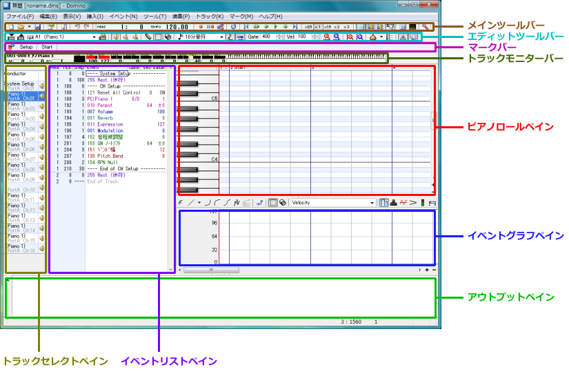
- Main Toolbar
- Contains buttons necessary for saving and playback.
- Edit Toolbar
- Contains buttons necessary for editing and each task.
- Mark Bar
- Marks a location or seeks to a marked location.
- Track Monitor Bar
- Monitors the state of the current track (channel).
- Piano Roll Pane
- This corresponds to the staff in sheet music. Notes are pasted here. The horizontal axis is the time axis, and the vertical axis is the scale axis.
- Event List Pane
- The list of events of the current track is displayed.
- Event Graph Pane
- Extracts the values of specified events and displays them as a graph.
- Track Select Pane
- The part for switching the current track. It is not displayed by default.
- Output Pane
- If an error occurs, it may be displayed here. Normally it is okay to keep it closed.
Now, I will explain how to use it in order from here.
Before placing notes on the piano roll, if you want to confirm the sound of the scale,
right-click the scale part you want to confirm with the pen tool (
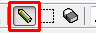
).
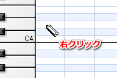
While right-clicking (dragging), the sound continues to play.
It is an essential function for people without perfect pitch (^^;
By the way, the things written in this box are all unimportant, so it is okay to ignore them.
When placing a note, please left-click where you want to place it using the pen tool ().
Notes are placed with default strength (Velocity) and length (Gate).
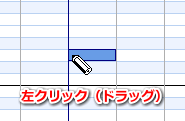
Also, by performing a left-drag operation, you can confirm the sound of that scale while dragging.
When you finish dragging, the note is placed.
Right-clicking during dragging cancels the placement.
Also, since an event to initialize the MIDI device exists in the first measure,
please place notes from the second measure onward.
If you can place notes appropriately, let's try playing.
To play, click the [Play] button on the toolbar, or if it's troublesome, press the [Space] key.
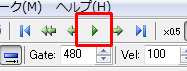
Since the space key is the main one, we do not accept complaints that the toolbar button is small and hard to press (^^;
Playback starts.
When it reaches the end of the input part, playback stops automatically.
Also, if you click the [Play] button again or press the [Space] key during playback,
playback stops.
If you want to play from the middle of the song, please left-click the header part of the position you want to play.
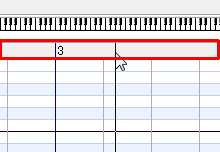
The vertical line representing the playback position moves, so if you play in this state, playback starts from here.
To change the length (Gate) of an already placed note, with the pen tool ()
move the mouse cursor to the right end of the note you want to change.
Then, the mouse cursor changes to a left-right arrow, so left-drag left-right in this state.
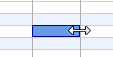
When you finish dragging, it is confirmed.
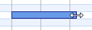
Also, right-clicking during dragging cancels the change.
Also, you can change Gate by directly entering into the Gate field of the corresponding note event on the event list pane.
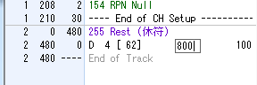
In this case, 480 is a quarter note, and the larger the value, the longer it becomes.
By the way, when directly entering into this event list part, you can perform arithmetic operations (parentheses can also be used) like "480*4*4",
so those who are bad at mental arithmetic, please use it.
To change Velocity, use the event graph pane.
The event graph is an area where you can extract only one of Velocity, Tempo, Control Change Event, etc.
and display & edit it as a graph.
First, click the [Velocity] button to display Velocity here.
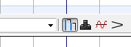
Then, bars are displayed at the same horizontal position as the notes placed on the piano roll.
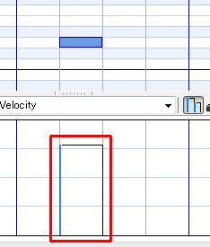
This represents Velocity as a graph; the shorter it is, the weaker (smaller value), and the longer, the stronger (larger value).
After that, use the pen tool () to drag the mouse so that it intersects the left side of the bar.
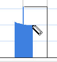
When you finish dragging, the value at the intersected position is reflected as Velocity.
(As usual, right-clicking during dragging cancels the change.)
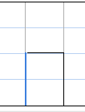
By the way, pressing the [Anchor Points] button to display the anchor,
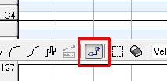
anchors will be displayed in the velocity area, so you can adjust by dragging up and down there.
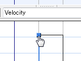
You can also change Velocity by directly entering into the Vel/Value field of the corresponding note event in the event list pane.
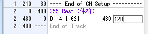
Please try using them according to the situation.
If you want to move a placed note later, move the cursor onto the note you want to move using the pen tool ().
Then the mouse cursor will change to a left-right/up-down arrow, so left-drag left-right/up-down in this state.
When you finish dragging, it is confirmed.
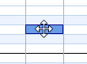
Also, right-clicking during dragging cancels the move.
If you edit by mistake, etc., pressing the [Undo] button on the toolbar (or Ctrl+Z on the keyboard) will revert the edit by one step.
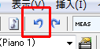
(The number of times you can undo varies depending on memory usage.)
To redo the reverted edit, press the [Redo] button on the toolbar (or Ctrl+Y on the keyboard).
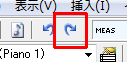
When placing, moving, or adjusting Gate of notes with mouse operations, you were probably snapping (quantizing) at a certain interval.
To make this interval longer or shorter, change the [Quantize] combo box on the toolbar.
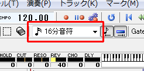
Also, to turn this snap function on/off, press the [Tick Quantize] button and [Gate Quantize] button in the toolbar information.
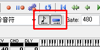
Tick Quantize switches whether to quantize at the position when placing a note, the position when moving, etc.
Gate Quantize switches whether to quantize when changing the Gate of a note, etc.
※ This setting also affects the selection tool explained later.
Also, during drag operations, pressing the [Ctrl] key temporarily switches quantize on/off.
To delete a placed note, left-double-click the note you want to delete with the pen tool ().
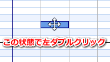
You can also delete by clicking the corresponding note event in the event list pane and pressing the [Delete] key.
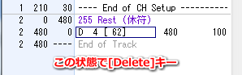
When placing a note on the piano roll, Gate and Velocity were automatically set,
at that time, the "default value of Gate and Velocity of the note" held by that track is used.
This default value is automatically memorized when you change the Gate or Velocity of a note on the piano roll or event list.
If you want to intentionally change this default value, adjust the Vel field and Gate field on the toolbar.
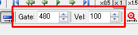
If you encounter a situation while editing where "I want to add several new notes with the same Gate and Velocity as this note",
you can change the default values of Gate and Velocity by eyedropping that note.
To eyedrop, right-click the note.
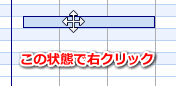
The default value has changed.
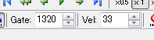
Then just place notes.
So far I have explained how to edit (move, delete, etc.) targeting a single note,
from here I will explain how to edit targeting multiple notes.
To move multiple notes at once, use the selection tool (
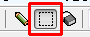
) to left-drag on the piano roll and select the notes.
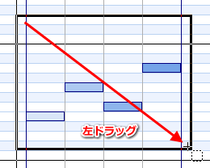
After selecting, when you move the mouse cursor into the selection range, the cursor becomes a left-right/up-down arrow,
so left-drag in this state.
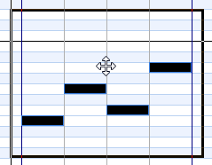
When you finish dragging, it is confirmed.
Also, right-clicking during dragging cancels the move.
To delete multiple notes, left-drag the part you want to erase using the eraser tool (
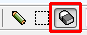
).
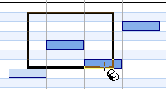
Deleted.
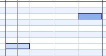
Also, after selecting the part you want to erase using the selection tool (), you can delete it the same way by pressing the [Delete] key.
To duplicate multiple notes, left-drag the place you want to duplicate using the selection tool () and select it.
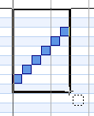
Please press the [Ctrl+C] key on the keyboard.
This copies the content to the clipboard.
(It is also OK to select [Copy] from the menu that appears by right-clicking the selection range.)
Set the playback position to where you want to paste.
(For the pen tool, left-click the header; for the selection tool, left-click on the piano roll).
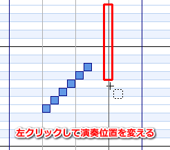
Press the [Ctrl+V] key on the keyboard.
The content is pasted.
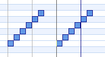
By the way, if you left-double-click on the selection range with the selection tool, [Copy] is performed,
and if you left-double-click outside the selection range, [Paste] is performed, so if the keyboard is troublesome, please try this operation too.
When duplicating to a nearby location, there is a more efficient method than copy & paste.
Use the selection tool () to left-drag the place you want to duplicate and select it.
Please left-drag on the selection range while holding the Ctrl key.
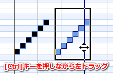
You can move the duplicate.
When adjusting Velocity on the event graph, if there are notes placed at the same timing,
all of them will be adjusted.
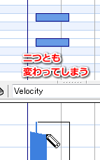
In case you want to "change only the Velocity of this note!",
if the number of notes is small (1-2?), right-click that note with the pen tool ().
Then the cursor will move to the Velocity field of that note on the event list, so please enter the value directly from the keyboard in this state.
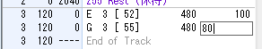
If there are many target notes, please select only the notes you want to change using the selection tool ().
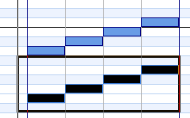
Next, try writing Velocity to the event graph using the pen tool ().
Only the Velocity of the selected notes will change.
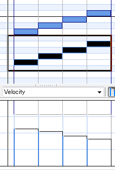
For example, if you want to add +10 to the Gate or Velocity of multiple notes,
select the notes you want to adjust using the selection tool ().
Right-click inside the selection range and select [Bulk Changes...] from the menu.
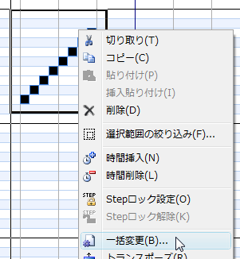
The [Bulk Changes...] screen is displayed.
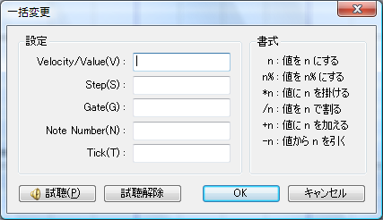
Here, for example, if you want to set all Gates to 240,
enter "240" in the Gate field and press the [OK] button.
The Gate of the note becomes 240.
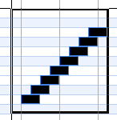
For example, if you want to double the Gate from the current state,
enter "*2" in the Gate field and press the [OK] button.
For example, if you want to add +20 to the Gate from the current state,
enter "+20" in the Gate field and press the [OK] button.
Various adjustments are possible from direct value specification to relative specification.
In case you "placed several long notes but want them to stop at this position", move the playback position to where you want to stop (left-click the header),
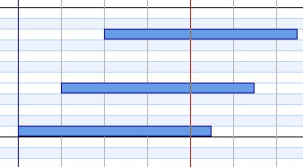
Please select [Slice (cut off)] from the [Event] menu.
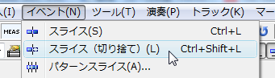
The Gate of each note is adjusted at the playback position.
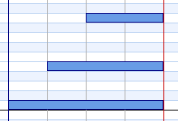
Also, the [Slice] function is a function that splits one note into two at the playback position.
Also, by specifying a range with rectangular selection and then executing, you can make only the specified pitch range the processing target.
Furthermore, by adjusting [Gate of Sliced Left Note] in [General] of [Preferences], it is also possible to shorten the Gate of the split left note.
If you want to do something like a guitar strum, select the notes you want to strum using the selection tool ().
Next, right-click on the selection range and select [Stroke].
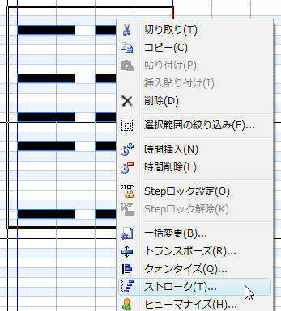
The [Stroke] screen is displayed.
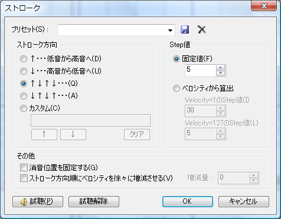
Here, specify the direction you want to strum (down / up) and the Step value, and press the [OK] button.
The timing of the notes shifts.
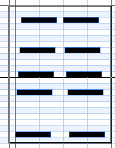
For example, assuming there is a state where long Gate and short Gate notes are placed consecutively, and you want to change only the long Gate notes all at once.
If you simply select, the short Gate notes will also be selected & processed together.
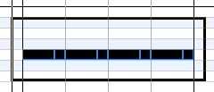
In this state, right-click on the selection range and select [Filter...].
The [Filter...] screen is displayed.
In the above example, if you appropriately specify the Gate range and press the [OK] button, you can select only the long Gate notes.
(After this, if you use the [Bulk Changes...] function or copy/paste, only the selected notes will be processed)
To lower or raise multiple notes by one octave at once,
select the notes using the selection tool (), right-click on the selection range, and select [1 Octave Up] / [1 Octave Down].
The pen tool and the selection tool can be switched with each other by right-double-clicking on the piano roll.
※ You can also assign shortcut keys to the pen tool and selection tool respectively.
Double-click the program change event (purple event) on the event list to change the instrument.
This event is displayed as "ProgramChange" or displayed as "PC:(instrument name)", etc.
The [Program Change Event Properties] screen is displayed.
Please specify Map, PC, Bank and click the [OK] button.
The tone of the part changes.
To change the volume or panpot of a part, click the Vel/Value field of an event such as "Volume" or "Panpot" near the beginning of the event list,
Please enter the value from the keyboard.
(Confirmed with the [Enter] key.)
※ The notation and color may differ depending on the sound source definition file.
Previously we only changed the volume of a part once at the beginning of the song, but for changing volume and pan live,
switch the event graph display to "Volume".
(The notation may differ depending on the sound source definition file.)
In the event graph section, how the volume of the part changes over time is displayed as a line graph.
Then, use the pen tool () to move the mouse cursor to the position you want to change.
(You can also switch to the pen by directly clicking the freehand tool.)
Referring to the value displayed at the right end of the status bar, left-click at the place you want to write.
An event to change the volume of the part has been inserted at that position.
By the way, pressing the [Anchor Points] button to display the anchor,
you can also move the event placed once left-right/up-down with the pen tool.
Dragging while holding the Ctrl key activates the Tick quantize function.
Dragging while holding the Shift key activates the Tick fix function.
Also, you can insert an event at the playback position by clicking the numeric part on the left with the mouse.
Please use the functions that are easy to use according to the situation.
To input pitch bend or expression continuously, switch the event graph display to
pitch bend or expression.
Next, select the line or curve you want to use.
When you left-drag on the event graph part, you can see how it will be input, so
please end the drag operation at a good place.
Dragging while holding the Ctrl key activates the Tick quantize function.
Right-clicking during dragging cancels the input.
When you finish the drag operation, events are inserted continuously.
Immediately after installation, the height of the event graph pane is set to an optimal size,
but if you try to input pitch bend in detail, it may be too narrow.
In that case, you can adjust the height of the event graph by dragging the "knob" slightly above the event graph pane up and down.
To return to the original optimal size, left-double-click the "knob".
Also, the insertion interval can be changed from [Interval Setting] in the menu that appears by pressing the [▼] button on the right side of the line tool.
The previous method of inputting lines/curves with the mouse can be said to be a difficult method for those who want to input proper data, as it is subject to subtle mouse movements.
In that case, it might be good to use the function to input lines/curves into the selection range.
To use this function, first display the type of data you want to input on the event graph.
Select the event graph part with the selection tool ().
Please press the [Input Line/Curve into Selection Range] button on the toolbar.
The [Input Line/Curve into Selection Range] screen is displayed.
On this screen, you can input lines/curves from the left end to the right end of the selection range.
Please specify S.Value on the left and E.Value on the right.
(It is also possible to drag the triangle mark with the mouse.)
Please set the Step value (interval) and line/curve formula and press the [OK] button.
Data is input.
Also, when inputting pitch bend, a field to specify by key (semitone) units in addition to value specification is displayed.
Display the events you want to copy on the event graph,
and select the event graph part with the selection tool ().
Press the [Ctrl+C] key on the keyboard.
(It is also OK to select [Copy] from the menu that appears by right-clicking the selection range.)
This copies the event to the clipboard.
After that, left-click where you want to paste with the selection tool and adjust the playback position.
Pressing the [Ctrl+V] key on the keyboard pastes the events in the clipboard.
By the way, if you left-double-click on the selection range with the selection tool, [Copy] is performed,
and if you left-double-click outside the selection range, [Paste] is performed, so if the keyboard is troublesome, please try this operation too.
To change the track to edit (current track), click the track switch combo box on the toolbar and specify the track.
You can also move to [Next Track] / [Previous Track].
(Shortcut keys: [Ctrl+PageDown] [Ctrl+PageUp])
You can also make switching easier by displaying the [Track Bar], a bar for switching tracks.
If the [Track Bar] is hard to see, you can also switch by displaying the [Track Selection Panel].
The placement location of the [Track Selection Panel] can also be changed from [Preferences].
You can display the contents of other tracks simultaneously in the piano roll area.
To display notes of other tracks, click the [▼] button on the right side of the [Onion Skin] button on the toolbar,
and select the track you want to display.
Display Previous Track on Piano Roll
Displays the contents of the previous track on the piano roll.
Display Next Track on Piano Roll
Displays the contents of the next track on the piano roll.
Display Specified Track on Piano Roll
Specify a track to display its contents. Executing this displays the [Track Reference] screen, but you can also specify multiple with Ctrl+left click, etc.
Display Same Color Track on Piano Roll
Displays tracks of the same color on the piano roll.
Track colors can be set from [Onion Color] on the [Track Properties] screen or from the right-click menu of the track select pane.
Also, if [Remember Settings Per Track] is on, the onion skin settings are remembered per track.
If off, you can use common settings for all tracks.
You can also set onion skin from the [Track Bar].
Please right-click the track you want to display.
Ctrl+right click also switches track display ON/OFF.
(An underline is attached to the target track.)
Likewise, you can set onion skin from the [Track Selection Panel] as well.
Shift+left click displays only that track,
Ctrl+left click switches display/hide of that track.
Tempo can be written only on a special track called the "Conductor Track", not on a normal track.
To change the tempo, select Conductor from the [Track Switch] combo box to make the Conductor Track the current track.
A tempo event exists near the beginning of the event list, so click the Vel/Value field and enter the value directly from the keyboard.
If you want to change the tempo in the middle of the song, use the pen tool on the Conductor Track and write on the event graph part.
Of course, you can also gradually speed up or slow down using the line tool, etc.
Since most devices have channel 10 as the rhythm track, channel 10 is preset as the rhythm track in Domino as well.
To edit the rhythm track, select "A10" from the [Track Switch] combo box and change the current track.
On other tracks, a keyboard image was displayed on the piano roll, but on the rhythm track, instrument names are displayed.
Editing is possible just like a normal track, but a slightly different point is that the default Gate value of notes is fixed (set on the definition file side).
Also, when placing a note, a ○ mark is displayed.
Also, when changing the drum set by double-clicking ProgramChange,
please set [Mode] to [Drum Set List] and then select the tone.
If you want to adjust Velocity in the event graph part, notes placed at the same timing will
all be adjusted.
(Even if you want to change only the bass drum, the snare also changes, which happens.)
This can be solved by the same method as "
Changing Velocity Values of Multiple Notes",
but for rhythm tracks there is an easier method, so I will explain it.
By left-clicking the instrument name on the left (dragging for multiple), you can select that scale.
If you write Velocity to the event graph part in this state, only the Velocity of the selected scale will change.
This explanation is only for those using "SC-8850" as the hardware sound source and "SC-8850" as the sound source definition file.
The default channel 10 is automatically set as the rhythm track,
but in the case of SC-8850, other tracks can be handled as rhythm tracks.
Here, I will explain how to make channel 11 "Drum1" or "Drum2".
First, make channel 11 (A11) the current track.
In the initial state of SC-8850, the part mode of channel 11 is a normal part (Norm), so first you need to
change this to "Drum1" or "Drum2".
To change the part mode, click the topmost event of the event list,
Select [Control Change] from the [Insert] menu.
A strange event is inserted, so please change its Step value to an appropriate value.
Double-click that event.
The [Control Change Event Properties] screen appears, so
select PartEdit→Part Mode from the macro part.
The setting on the MIDI device side is now OK.
Next, set Domino to handle this track as a rhythm track.
Double-click the ProgramChange event in the event list.
The [Program Change Event Properties] screen is displayed, so
please set [Mode] to [Drum Set List] and then select the tone.
Check [Update Track Info] (it should be checked by default),
and press the [OK] button.
Now the tone of the current track is set, and at the same time the track is set as a rhythm track.
To change the track name of the current track, please press the [Track Properties] button on the toolbar.
The [Track Properties] screen is displayed, so please enter the track name and press the [OK] button.
In the mode displaying the piano roll, only the content of the current track can be seen, so the overall track visibility is poor.
To add or remove tracks, it is easier to do so in [Track List] mode.
(Track addition etc. can also be done in [Track Selection Panel].)
To switch to [Track List] mode, press the [Tab] key on the keyboard.
(Pressing again brings back the piano roll)
Please right-click the track name part where you want to add and select [Add Track].
A new track is added after that track.
Right-click the added track, select [Track Properties],
and set the name, port, and channel.
The track content is empty, so you need to add initialization events, etc.
If you want to add a track including initialization events, please refer to "Adding All Tracks for One Port at Once" below.
In the newly created state, about 16 tracks for port A are prepared in advance, and all initialization events are included.
Such initialization information (default track information) is written in the sound source definition file specified for port A, and tracks are created based on that information.
In Domino, you can also add tracks all at once based on such initialization information.
To add default tracks, please right-click an appropriate track and select [Add Default Track].
A list of ports with sound sources specified is displayed, so please select the port you want to add.
Then default track information is displayed on the right side, so check the necessary tracks and press the [OK] button.
Tracks are added at the bottom.
To delete a track, switch to [Track List] mode ([Tab] key to switch), right-click the track name part you want to delete,
and select [Remove Track].
To change the order of tracks, switch to [Track List] mode ([Tab] key to switch), then left-drag the track name part of the track you want to rearrange up and down.
It is confirmed when the drag operation is complete.
(Right-clicking during drag operation cancels it.)
To copy, delete, paste, etc. the content of each event across multiple tracks,
switch to [Track List] mode ([Tab] key to switch), then use the selection tool or eraser tool to
select track content and perform copy, delete, etc.
Also, if you want to process all tracks, it is convenient to select the header part.
First, please switch to [Track List] mode ([Tab] key to switch).
I think the track name and a speaker icon are displayed on the left side.
The track on which the speaker icon is displayed means the track to play.
By left-clicking the area of the speaker icon, you can switch whether to play or not.
By right-clicking the area of the speaker icon, you can switch between solo performance and all tracks performance.
Also, on the normal piano roll screen, you can specify [Solo Performance (S mark)] and [All Tracks Performance (A mark)] on the toolbar.
By setting markers on the beat, it becomes easier to change the playback position.
It might be good to label Intro="I", A melody="A", B melody="B", Chorus="S", etc.
To add a marker, set the playback position to where you want to add it, and click the [Add Marker] button.
The [Add Marker] screen is displayed, so please enter the name and press the [OK] button.
The marker added earlier is displayed on the marker bar.
By clicking the marker on this marker bar, the playback position moves to the marked position.
To delete a marker or change the marker label, right-click the marker on the marker bar.
In the default state, it is 4/4 time signature, but to change this, double-click the time signature event of the Conductor Track.
The [Time Signature Event Properties] screen is displayed, so please set and click the [OK] button.
It is reflected on the editing screen.
If you want to change the time signature in the middle of the song (or if there is no time signature event), move the playback position to the measure you want to change and click [Time Signature] of the [Insert] menu.
Also, the time signature information inserted here is inserted into the Conductor Track, so please re-edit or delete it on the Conductor Track.
To set the title and other project properties, please press the [Project Properties] button on the toolbar.
The [Project Properties] screen is displayed.
Please enter the song name and copyright and press the [OK] button.
The song name is displayed on the window's title bar.
(This song name and copyright information are saved when exporting as SMF.)
Click an event in the event list, and with focus on the event list (square cursor is black),
select [Comments] from the [Insert] menu, and a comment event is inserted at the cursor position of the event list.
After setting the playback position on the piano roll side, select [Comments] from the [Insert] menu,
and a comment event is inserted at the playback position.
Use comment events when you want to leave a memo on the event list.
By clicking the event field of the comment event and entering characters from the keyboard, you can change the comment content.
Click an event in the event list, and with focus on the event list (square cursor is black),
select [Exclusive] from the [Insert] menu, and an exclusive event is inserted at the cursor position of the event list.
After setting the playback position on the piano roll side, select [Exclusive] from the [Insert] menu,
and an exclusive event is inserted at the playback position.
To change the content of the exclusive event (although you can also enter directly on the event list),
please double-click the event.
The [Exclusive Event Properties] screen is displayed.
The explanation is written in this screen, so please read it.
Please set the content and press the [OK] button.
Normally, control change refers to control change numbers 0 to 127, which are messages to set volume and panpot by number,
but in Domino, this control change is further extended, allowing you to freely define and use numbers 128 and above (see
Sound Source Definition File Specifications for the upper limit of numbers).
This allows you to adjust device-specific parameters such as master volume and EFX with the same ease as normal control change.
Click an event in the event list, and with focus on the event list (square cursor is black),
select [Control Change] from the [Insert] menu, and a control change is inserted at the cursor position of the event list.
After setting the playback position on the piano roll side, select [Control Change] from the [Insert] menu,
and a control change event is inserted at the playback position.
To set the number and value of control change, please double-click the event.
The [Control Change Event Properties] screen is displayed, so please set the macro and value you want to set and press the [OK] button.
To insert multiple control change macros at once, set the playback position to where you want to insert,
and select [Control Change (Multiple)] from the [Insert] menu.
The [Insert Control Change Event (Multiple)] screen is displayed.
Please check the macro you want to insert and press the [OK] button.
(If you check the folder part, all macros in it will be checked.)
※ The screen is an example using the SC-8850 sound source definition file.
Events have been inserted.
To play a specific part in a loop, select the range you want to loop.
Next, press the [Loop] button on the toolbar.
After that, just play, and the range will be played repeatedly.
For temporarily loop playback, the above method is the quickest, but if you want to loop play the same part regularly, it is troublesome to select it every time.
In that case, select the range you want to loop, then select [Place Markers On Selection] from [Loop] of the [Playback] menu.
Loop markers are displayed on the header.
The start and end points of the loop marker can be moved with left-drag of the mouse.
Whether to prioritize the selection range or loop marker as the loop range can be switched with [Priority Selection Range] ON/OFF from [Loop] of the [Playback] menu.
MIDI sound sources hold various values internally.
For example, if you play a part in Domino and stop playback after transmitting pitch bend 4000,
and then start playback again from another location, the pitch bend value inside the sound source remains 4000,
so it will be played at an unintended pitch.
Of course, the same applies to volume and panpot, not just pitch bend,
and there are many cases where you cannot play as intended.
In Domino, it has become possible to match the current playback position and the state of the MIDI sound source to some extent.
To match the state, please select [Sync of MIDI Devices] from the [Playback] menu.
The parameters that match the state vary depending on the sound source definition file,
but program change events, volume, panpot, expression, etc. are valid.
Also, you can automatically match the state.
To automate, please select [Auto-Sync to MIDI Devices] from the [Playback] menu.
Then, when you move the playback position, the [Sync of MIDI Devices] process is automatically executed.
Variables can be used in the Gate field and Vel/Value field of control change events, and in tempo.
I think it is better to keep it as a "constant" usage rather than a "variable".
Although I tried making it, the usability may not be very good.
For example, assuming there is a song structure like A melody → B melody → Chorus → A melody → B melody → Chorus,
let's say you want volume 50 during A melody and volume 60 during B melody.
When setting volume normally without using variables,
A melody (Vol=50) → B melody (Vol=60) → Chorus → A melody (Vol=50) → B melody (Vol=60) → Chorus
you probably insert events in each scene like this.
However, in this case, if you want to change the A melody volume to 55, you need to modify 2 places.
(It's fine if it's only 2 places, but if there are many, it's tough)
Therefore, if you define variables in advance such as "a_vol = 50", "b_vol = 60" using variables,
and specify that as the value of the Volume (Part Level) event,
if you want to change the A melody volume later, you only need to modify "a_vol = 55".
To actually define variables, select [Variable List] from the [Edit] menu.
All variables existing in memory are displayed, so
please write the variables you want to use line by line in the format "variable name = value".
(Variable names distinguish between full-width and half-width, but do not distinguish between half-width uppercase and lowercase. Rather, they become lowercase.)
After that, you can use it simply by directly entering the variable name in the Vel/Value field of the control change event.
Also, the effective range of this variable is all tracks within that file, so if you simply use a name like a_vol there,
you may have trouble when you want to do something similar on other tracks ^^;;
By the way, there are also variable events, which are events that can define and recalculate variables during playback.
However, since they do not have good compatibility with the [Sync of MIDI Devices] function,
it is better to avoid using variable events when using that function.
You can take in the content played in real time from a MIDI keyboard etc. as data.
(This is not a function to record audio from a microphone.)
To do real-time recording, please press the [Real-time Recording] button on the toolbar.
The [Real-time Recording] screen is displayed, so please set the playback range and tempo and press the [Record] button.
Playback starts, so please start input from the MIDI keyboard, etc.
When playback ends or when you press the [Stop] button, the input content is reflected on the screen.
Step recording is a function to take in content input from a MIDI keyboard as data.
Unlike real-time recording, since you specify the length (interval) of notes in advance,
you can record at free timing.
To do step recording, please press the [Step Recording] button on the toolbar.
The [Step Recording] screen is displayed, so please specify Step and start input from the MIDI keyboard.
Also, while sounding, pressing the [Next/Tie][Previous] button can increase/decrease the Gate of the input note.
(The same processing is performed by tilting the pitch bend instead of the [Next/Tie][Previous] button.)
Also, by pressing the [PC Keyboard] button, you can do step recording from the PC keyboard without using a MIDI keyboard.
Shortcut keys etc. can be changed from the [Settings] button.
If you want to try playing a sound, please input while holding the [Ctrl] key.
(While holding the [Ctrl] key, no event is inserted.)
To take in exclusive data transmitted from MIDI devices etc. into Domino, click the [Exclusive Reception] button on the toolbar.
The [Exclusive Reception] screen is displayed, so set the midi-in device to receive and step,
then start transmitting exclusive data from MIDI devices, etc.
When reception succeeds, an exclusive event is inserted on the screen.
To save the edited content, press the [Save] button on the toolbar.
It will ask for the save location, so please specify where you want to save and the file name and press the [Save] button.
By the way, the file format saved here is Domino's own sequence data (Domino Sequence Data).
This cannot be played on other players, etc. as is.
This is a save to keep all edited content carefully.
To open previously saved files or midi files, press the [Open] button on the toolbar.
It will ask which file to open, so please specify and press the [Open] button.
The file is loaded.
mid files (Standard MIDI File) can read Format 0 and Format 1.
By the way, to open recently used files, please press the [▼] button on the right side of the [Open] button.
There is an event (End of Track) indicating the end position of each track,
and the End of Track that is last in time across all tracks becomes the end position of the song.
If after playback finishes, playback does not end for a while from there,
or conversely, if the end position of the song is too early (after writing out as a midi file) and playback ends before the sound finishes playing,
this can be solved by adjusting the playback position.
To adjust the end position of the song, set the position you want to be the end position as the playback position.
Next, select [Mark End of Track] from the [Event] menu.
Now End of Track events for all tracks are rearranged at the playback position.
(Of course, if there are events behind, they cannot be rearranged ^^;)
To write out the music data being edited as a mid file (Standard MIDI File),
press the [Export As SMF (MIDI)...] button on the toolbar.
It will ask for the export destination, so please specify the location and file name and press the [Save] button.
It is written out as a mid file.
For example, Domino crashes due to null pointer access while editing,
the breaker trips because the family uses a hair dryer and microwave,
the file being edited may disappear due to such external factors.
Of course, if you [Save] frequently, that's fine, but it's not always easy to think that far.
Therefore, if you use the backup function, the save process is automatically executed periodically.
To use the backup function, press the [Preferences] button on the toolbar,
and select [Backup] on the left side of the [Preferences] screen.
Please check [Perform Periodic Backup], specify the interval, file name, and save location, and click the [OK] button.
Now the file is saved at the specified time intervals.
Shortcut keys can be assigned to all commands displayed in the main menu.
To assign a shortcut key, press the [Preferences] button on the toolbar,
and select [Shortcut Keys] on the left side of the [Preferences] screen.
Content similar to the menu is displayed as a tree, so please select the command you want to assign.
By pressing the key you want to assign from the keyboard, you can assign the key to the selected command.
Multiple keys can be assigned to one command.
If you want to clear the key, please press the [Clear] button.
Pressing the [Reset] button returns to the settings at the time of Domino introduction.
Pressing the [OK] button reflects the settings.
The toolbar on the main window can be freely customized.
To customize the toolbar, select [Toolbar → Customize] from the [View] menu.
The [Toolbar Customize] screen is displayed.
First, please select the toolbar you want to customize from the combo box.
Find the command you want to use from the left side and drag & drop it to the right side.
(If you change the category combo box, commands of that category appear)
If you want to delete a command, select the command you want to delete and press the [Delete] button
(or drag & drop the command to the outside).
If you want to change the name of the toolbar, please press the [Toolbar Name] button.
If you want to return the toolbar to the state at introduction, please press the [Reset] button.
Pressing the [OK] button reflects the customization content.
If you want to place a command without an icon on the toolbar, please submit a request in the sense of "please add an icon to that command" (^^;
Mouse operations of the pen tool and selection tool can be freely customized.
For example, at introduction, left-clicking with the pen tool places a note,
but you can make left-click a preview and place a note with left-double-click.
To customize mouse operations, press the [Preferences] button on the toolbar,
and select [Mouse Operations (1)] on the left side of the [Preferences] screen.
A correspondence table of mouse operations and movements is displayed, so please click the part you want to change.
Options are displayed, so please select the desired operation.
Pressing the [OK] button reflects the content.
Middle click (= wheel click) may not be available depending on the mouse driver.
Middle click may become available by changing the settings on the mouse driver side.
You can input lines/curves on the event graph using [Line] or [Fast Curve],
but these lines/curves can be freely customized with formulas.
To customize curves and lines, press the [▼] button on the right side of the [Line] button on the toolbar,
and select [Customize] → [Edit] from the menu that appears.
The [Curve Customize] screen is displayed.
If you want to add a new line/curve, please press the [Add] button and enter the name.
The content selected in the [Curve List] area on the left is displayed in the [Curve Settings] area on the right.
Please enter the curve formula and press the [OK] button after checking the preview.
Also, in the preview area, you can freely move the start and end points with mouse drag.
Since the X-axis unit is different between this preview screen and the actual event graph screen,
it may not be very reliable... .
To use the curve formula created this way on the event graph,
select [Customize] from the menu that appears by pressing the [▼] button on the right side of the [Line] button on the toolbar,
and select the curve you want to use.
If you use customized curves frequently, it is convenient to add an [Edit] icon in the toolbar customization.
If there is room, adding a [Line/Curve] combo box makes it even more convenient.
After that, just drag the mouse on the event graph pane just like with lines, etc., and you can input with that curve.